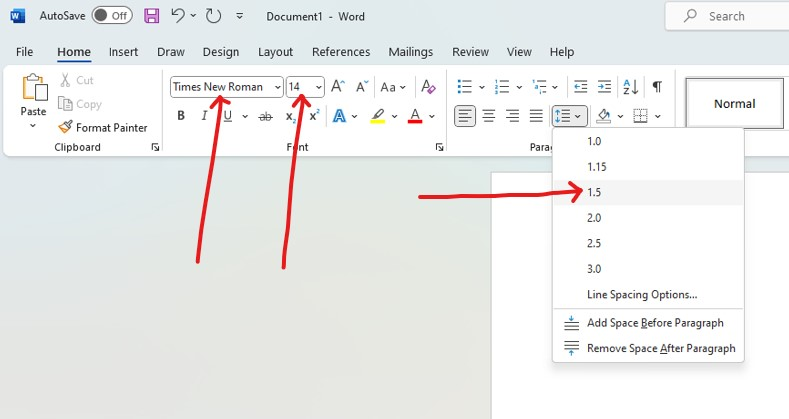
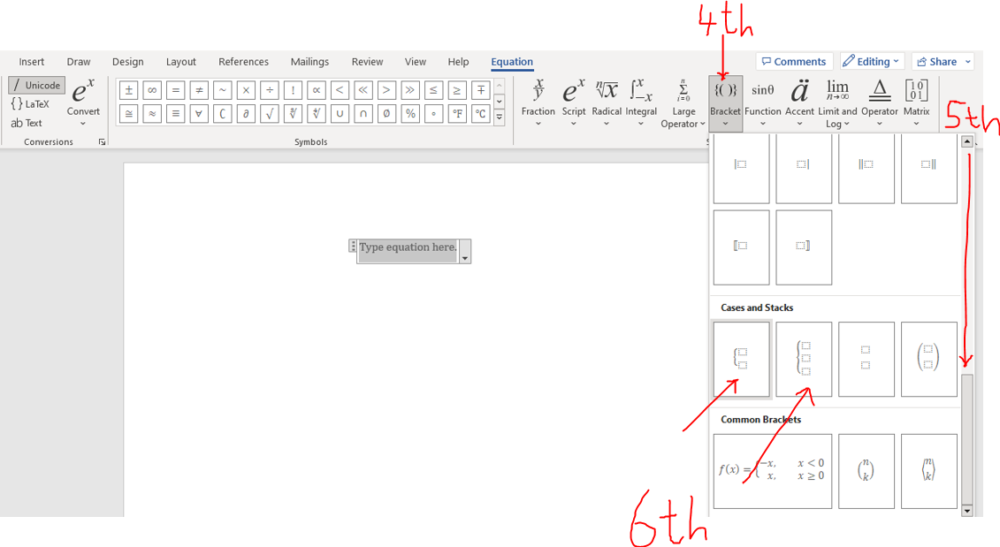
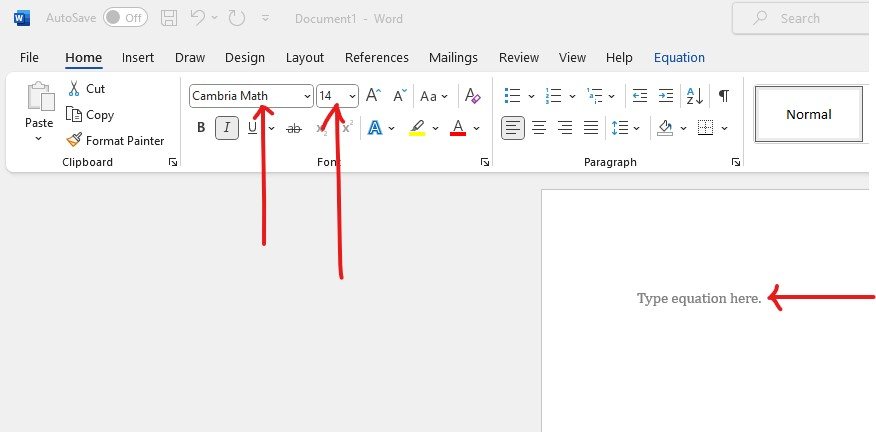
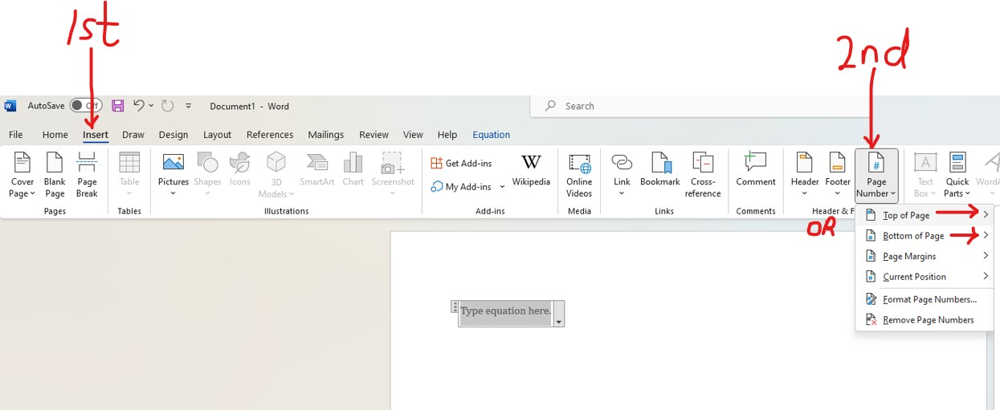

General Project Requirements
(1.) You may work as a group (peer tutor to teach/correct one another).
However, this is an individual project.
In other words, you will submit your own project.
(2.) No two projects should be the same.
(a.) You may not do any of my examples even if the rates of the company have changed.
Use my examples as guides to completing your own project.
(b.) You may not do any of the projects of my previous students.
The Student Project samples are provided below. Use them as guides to completing your own project.
(3.) Research any real-world application of piecewise function.
(a.) All information used for this project should be verifiable on the direct website of the
company/organization.
(b.) Textbook examples are NOT allowed.
(c.) Find any application that has at least 2 pieces, and has at least a function in each
piece that includes the independent variable.
(4.) As a student, you have free access to Microsoft Office suite of apps.
(a.) Please download the desktop apps of Microsoft Office on your desktop/laptop (Windows and/or
Mac only).
Do not use a chromebook.
Do not use a tablet/iPad.
Do not use a smartphone.
Do not use the web app/sharepoint access of Microsoft Office.
(Please contact the IT/Tech Support for assistance if you do not know how to download the desktop
app.)
In that regard, the project is to be typed using the desktop version/app of Microsoft Office Word
only.
(b.) The file name for the Microsoft Office Word project should be saved as:
firstName–lastName–project
Use only hyphens between your first name and your last name; and between your last name and the word,
project.
No spaces.
(c.) For all English terms/work (entire project): use Times New Roman; font size of 14; line spacing of
1.5.
Further, please make sure you have appropriate spacing between each heading and/or section as
applicable.
Your work should be well-formatted and visually appealing.

(d.) For all Math terms/work: symbols, variables, numbers, formulas, expressions, equations and fractions among others, the Math Equation Editor is required.
(i.) The font is set to Cambria Math by default (set it to that font if it is not); font size of 14, and align accordingly (preferably left-aligned).
(ii.) To ensure appropriate spacing between your Math work, use a line spacing of 2.0.
Alternatively, you may use line spacing of 1.5 but insert a space after each equation as applicable.
Your work should be well-formatted, organized, well-spaced (not compact), and visually appealing.
(iii.) Align the functions in each piece of the piecewise function accordingly.



(e.) Include page numbers. You may include at the top of the pages or at the bottom of the pages but not both.

(5.) Research Skills: Cite your source properly. Use APA, MLA, or Chicago Manual of Style.
Indicate the style you used.
(6.) Writing Skills: Write the complete address of the direct page of the website where you found the application.
Write the main application completely.
Write all the information accoridngly as noted in the Example Guide and the Checklist.
(7.) (a.) Mathematical Skills: Show all work.
Arithmetic: This is the Arithmetic method.
Use random numbers to test the real-world application manually for each piece.
Show all work including intermediate calculations/values.
Write down your results.
(b.) Algebra: This is the Algebraic Method (Piecewise Function Method).
Define your variables accordingly.
Write a piecewise function for that application.
Test the piecewise function with the same random numbers that you used for the Arithmetic method.
Please NOTE:
(i.) The intermediate results should be the same for both methods.
(ii.) The final results should be the same for both methods.
If either of the results are not the same, there are issues. Please fix them.
These are the required information.
You may or may not not use a table format. Use whatever format that is visually appealing.
Please be creative.
(8.) Mr. C (SamDom For Peace) wants you to do this real-world project very well.
Hence, he highly recommends that you submit a draft so he can give you feedback.
(a.) First: (Required): Please submit the required information in the Projects: Company Names and Websites page in the Discussions forum on the Canvas course.
An example was given in the forum.
The name of the company that has the application should be written.
The complete web address of the web page that has the application should be written.
The objectives should be written.
Please be very specific. In other words, I do not have to click on anything to see the application.
Once I visit the webpage that you provided, I must see the application directly on that page.
I shall review and respond.
(b.) Second: (Highly Recommended): When the company name and website is approved, please submit your draft.
Draft projects are not graded because they are drafts. They are only for feedback.
If your professor gives you an opportunity to submit a draft, please use that opportunity.
Submitting drafts is highly recommended. Submitting drafts is not required.
It is highly recommended because I want to give you the opportunity to do your project very well and make an excellent grade in it.
Please turn in your draft in the Discussions page → Projects: Drafts forum in the Canvas course (if you would like your colleagues to read my comments and avoid any mistakes that you made).
You may also send it to me via email (if you do not want your colleagues to see my comments and learn from the comments).
I shall review and provide feedback.
Then, review my feedback and make changes as necessary.
Keep working with me until I give you the green light to turn in your actual project. This must be done before the final due date to turn in the actual project.
When everything is fine (after you make changes as applicable based on my feedback), please submit your work in the appropriate area: Assignments page → Piecewise Functions Project in the Canvas course.
Only the projects submitted in the appropriate place in the Canvas course are graded.
(9.) All work must be turned in by the final due date to receive credit.
Please note the due dates listed in the course syllabus for the submission of the draft and the actual project. In the course syllabus, we have the:
(a.) Initial due date for the Project Draft: Please turn in your draft.
(b.) Initial due date for the Project: If your draft is not ready for submission, keep working with me. Make changes based on my feedback and keep working with me.
If you prefer not to turn in a draft, please review all the resources provided for you and do your project well and submit.
(c.) Final due date for the Project Draft: This is necessary if you want a written feedback for your draft.
After this date, written feedback would not be provided for your draft. However, verbal feedback would still be provided during Office Hours/Student Engagement Hours/Live Sessions.
(d.) Final due date for the Project: All work must be turned in by this date to receive credit.
After this date, no work may be accepted.
| Name: | Your name |
| Date: | The date |
| Instructor: | Samuel Chukwuemeka |
| Project: | Water Bill: Residential Rates |
| Company: |
Calhoun County Water Authority (https://calhouncwa.com/rates.html) (Name of the company and the direct Website of company that has the piecewise function) |
| Objectives: |
(1.) Calculate the water bill of the residents of Calhoun County in the State of Alabama within
each
range of specific water usage manually using Arithmetic method. (2.) Write a piecewise function of the residential rates. (3.) Recalculate the same water bill of the residents of Calhoun County in the State of Alabama within each range of specific water usage algebraically using the Piecewise Function method. |
| Information: | Write the direct information from the direct website |
| Arithmetic Method: | Test each piece manually |
| Piecewise Function: | Write the piecewise function of the information |
| Piecewise Function Method: | Test the same piece algebraically |
| Citation: |
Indicate the type of citation format. Cite your source(s) accordingly. |